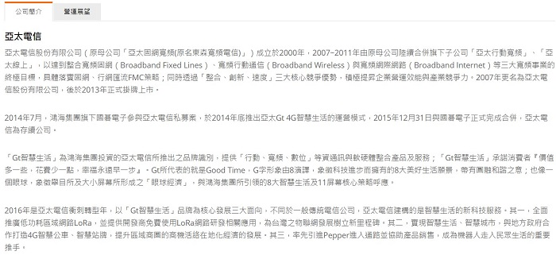

企業資料通訊 作業1
第一次作業-3/9
-
針對下列六種連線技術。請針對每種連線方式，列出你居住的城市可提供該服務的機構，並請貼上其官方網站資訊，以及其宣稱的網路服務特色。
(1) ADSL
機構:中華電信(ADSL)。
官方資訊:
網路服務特色:
HiNet寬頻(ADSL)接續方式服務，採用ADSL技術上網，它是一種利用傳統電話線路調變/解調變技術，符合一般使用網際網路者習慣與特性，來提供高速網際網路上網服務。讓使用者真正享受到ADSL所帶來的飆網速度。 ADSL接續方式及採用不對稱速率模式，既讓使用者享受飆速快感，此外ADSL使用「聲音」與「資料」分離技術，同樣使用一條電話線，打電話還可以同時上網路。ADSL上網也不再像以前的modem撥接需另外付一筆可觀的市內電話費。也降低使用者的上網成本。
(2) Cable Internet Access: 有線電視上網
機構: bb寬頻
官方資訊:
本公司主要的營運項目為：(1)提供基本的視訊服務：收視戶裝機、移機、復機等(2)有線電視服務：有線頻道節目傳送、自製電視節目傳送(3)有線電視配件服務：室內分配線路之服務(4)多元數位化服務：bb寬頻上網、bb光纖網路、數位型有線電視(bb TV) (5)有線電視廣告服務：商業廣告製作、廣告託播、各類型影片及節目製作、節目時段托播等媒體服務。
網路服務特色:
Cable寬頻網路已是美國上網主流，而寬頻網路是利用有線電視傳送節目的纜線，來做網路訊號傳輸的工作，但必須要使用成本較高的光纖與同軸纜線混合的HFC纜線，才能連接Cable Modem來高速上網，bb寬頻即是用此高成本、高科技的HFC光纖網路，提供用戶上網服務。除了以讓用戶可用高科技的光纖級網路享有穩定、快速及網路服務外，另還提供用戶終身免電路費、比ADSL更省的費率，可說是CP值超高。而客戶在上網時也超便利，只要電腦一開機就可連上網，不用擔心家中長者及小孩不會操作! 貼心的是，還提供一通電話到府裝機服務，裝機時間完全配合客戶，十分彈性!
(3) FTTH 光纖到府
機構: 中華電信(光世代)
官方資訊:
HiNet(光世代)業務係以光世代光纖電路接續至網際網路之服務，也就是採本公司提供之光世代網路由本公司機房或利用光纖迴路連接至光化交接箱、社區、大樓、家庭等，利用各式光網路設備，搭配乙太網路(Ethernet)或VDSL技術，提供客戶高速光纖寬頻電路遨遊網際網路(Internet)之服務。
網路服務特色:
光世代電路之各速率係指光纖網路最高可提供之線路速率(line rate)，以光世代連結網際網路時，其網路品質依國際標準歸類為「Best effort」模式。HiNet係為開放性網路，其特性是以Best effort方式提供上網服務，實際上網速率因客戶之終端設備軟硬體、距離、使用者所在位置之環境及到訪網站之連外頻寬、同時使用影音加值服務等因素影響而有所變化。
(4) Public WiFi 公共無線區域網路
機構: iTaiwan 無線上網
官方資訊:
網路服務特色:
本項服務係採共享頻寬方式，依使用者人數多寡而不同，原則希望使用者有5M之使用頻寬，主要為提供民眾無線上網基本資訊服務，滿足民眾於外出活動或洽公時之臨時性上網需求，方便民眾得空時可上網收發電子郵件、瀏覽網頁等基本及經常使用的服務品質，至於民眾下載大量影音、檔案之需求，則可自行取用商用服務，本案仍以基本上網服務為主，此和其他國家作法亦為一致。 iTaiwan熱點是採用WiFi之無線連網技術，一般而言，各熱點是以所設無線基地台(AP)為中心方圓20公尺內為無線網路訊號較佳之範圍，且會因室內屏障產生訊號衰減。另本服務主要於室內公共空間提供服務，如於室外場所偵測到iTaiwan服務訊號時，應先行確認是否為iTaiwan所提供之服務，以確保使用安全。
(5) 3G 或 4G行動通訊網路
機構: GT亞太電信
官方資訊:
網路服務特色:
亞太電信具備雙低頻涵蓋優勢，700MHz + 900MHz + 2.6GHz高頻補足容量需求 並與5G接軌900MHz為全球物聯網黃金頻段 。受限於無線傳輸特性，行動通信網路實際連線速率會因使用地點之地形、地上物遮蔽情形、使用之終端設備、使用人數、距離基地台遠近、客戶移動速度或其他環境等因素影響而有所差異；如使用4G門號，地點無法支援4G網路，則可能會轉為3G網路，期間產生之用量仍以4G服務費率計算。前述轉換情況下速線速率將會降低；此外在同一地點、同一時間、同時上網人數太多，而造成網路壅塞時，有可能產生暫時無法連線上網之情況，如於室内使用，因受建物遮蔽效應及室内裝潢將影響收訊品質及連線速率。
(6) Ethernet校園乙太網路
機構: TANet臺灣學術網路
官方資訊:

網路服務特色:
因無線網路漫遊發展迅速，讓使用者具備了高度的移動性。提供無線使用者即使在非自己學校的無線網路中，也能夠使用其他學校的無線上網服務，後端的認證伺服器必須彼此間要做好相關的漫遊設定。利用 IETF 所制定的 RADIUS 認證伺服器，我們可輕易達到使用者漫遊的目的。也就是出了自己學校的範圍，使用者仍可使用相同帳號來使用有加入漫遊行列的學校無線網路上網。
-
請針對「你家」或者「你的宿舍」回答下列上網環境的問題：
(1) 說明你所使用的連線技術為何？(提示：應該是上題的其中一種連線技術，除非不得已，否則此題不要填寫3G/4G上網方式)
FTTH 光纖到府
(2) 此上網服務的提供者 (Internet Service Provider, ISP) 是誰？中華電信(光世代)
(3) 請提供一張用來連接此ISP所需使用的網路設備照片。(注意，不是電腦設備。若第一小題選擇3G/4G上網者，請盡可能提供附近基地台的照片)
(4) 說明此設備的名稱以及功能為何？名稱:數據機
功能:可以把類比訊號轉換成數位訊號，把數位訊號轉換成類比訊號。
-
請選擇一項你使用的通訊終端系統 (End System)，例如：個人電腦 (Personal Computer)、筆記型電腦 (Laptop Notebook)、平板電腦 (Tabulate Computer)、或者手機 (Cellular Phone) 等，回答下列問題：
(1) 你選擇的終端系統之設備詳細名稱為何？
筆記型電腦
(2) 此設備所使用的上網方式為何？(注意，可能會有多種上網方式)WiFi
(3) 請貼上一張此設備已經連上Internet的網路狀態詳細畫面。(例如：電腦右下角的網路狀態細節、或者手機連線狀態內容細節)